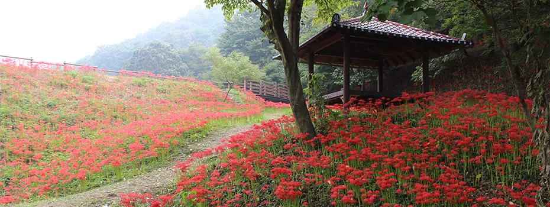
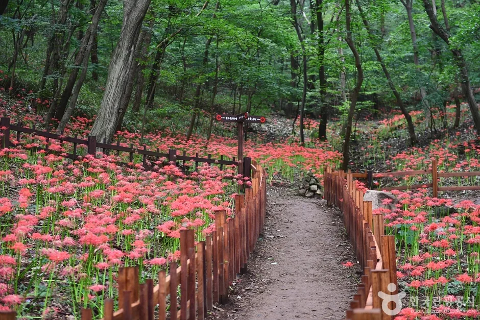
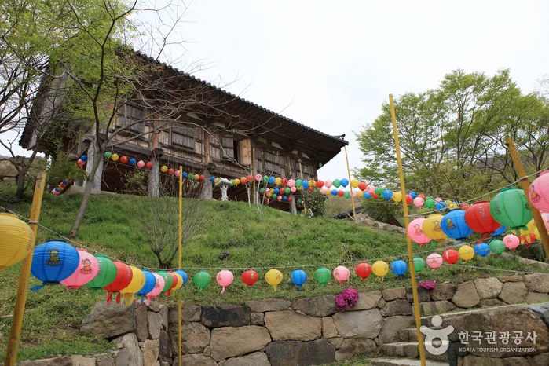
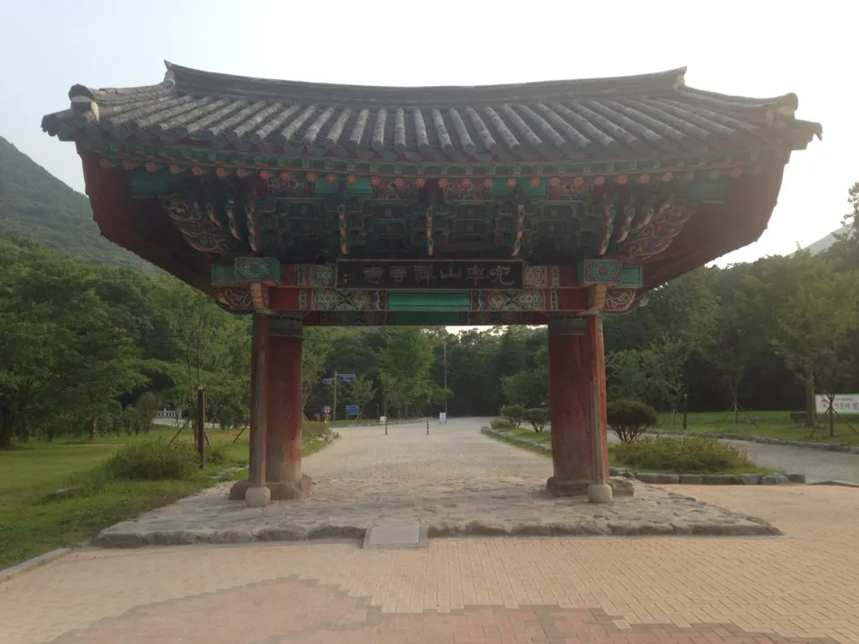
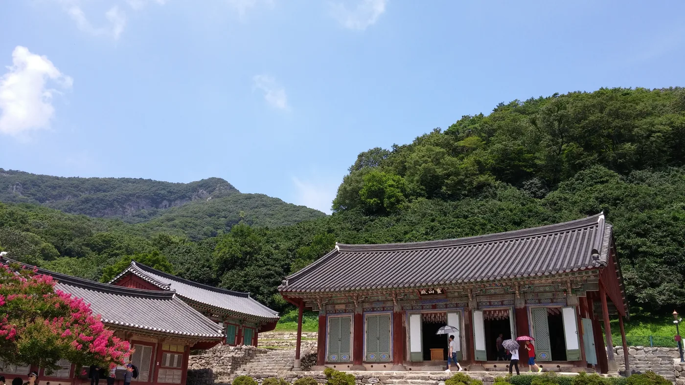
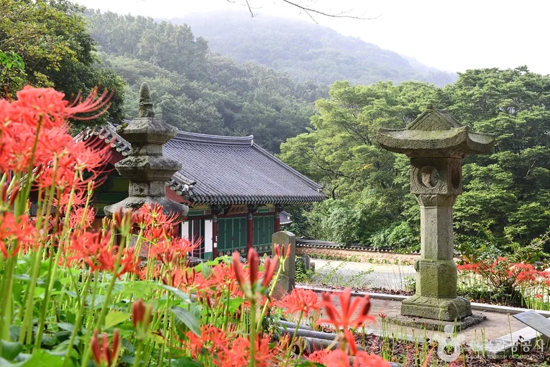
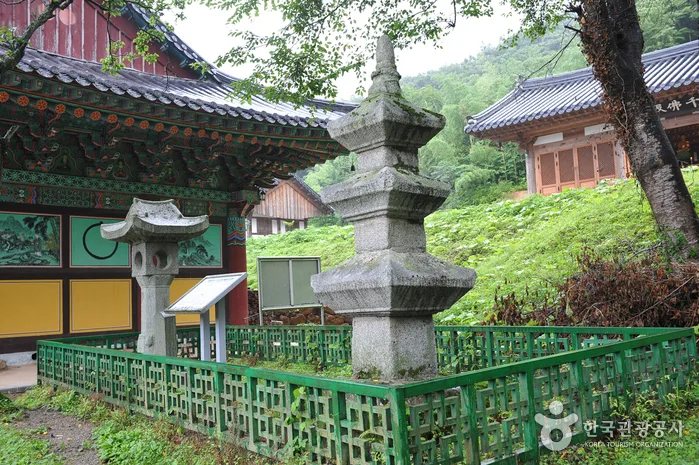

▲ 함평 용천사 꽃무릇공원. 9월 16일부터 20일까지 제27회 함평 모악산 꽃무릇축제가 열린다 사진=함평군청 문화관광

▲ 용천사 숲길을 따라 데크 산책로 양옆으로 붉게 핀 꽃무릇 군락 ⓒ 한국관광공사
9월이 되면 포털과 지역 언론에 똑같은 문장이 반복된다. "국내 3대 꽃무릇 명소, 고창 선운사·영광 불갑사·함평 용천사." 세 곳 모두 산자락 사찰 진입로에 꽃무릇(상사화) 군락을 두고 있고, 9월 중순 전후로 절정을 맞는다는 공통점 때문에 늘 한 세트로 묶인다. 그런데 정작 세 곳을 나란히 놓고 규모나 방문객 수, 주차 사정을 비교한 자료는 찾기 어렵다. 이름이 같은 급으로 불린다고 실제 체급도 같은 건 아니다.
세 곳 모두 대중교통으로 접근하기 애매한 읍·면 단위 사찰이라, 사실상 자차 방문이 기본값이다. 그래서 이번 비교는 '어디가 더 예쁜가'가 아니라 '어디가 차로 가기에 더 수월한가'에 초점을 맞췄다. 마침 함평 용천사에서는 9월 16일부터 20일까지 제27회 함평 모악산 꽃무릇축제가 열린다. 이 축제를 기준점 삼아 세 곳의 규모·일정·주차 구조를 숫자로 갈라봤다.
1. 기본 정보부터 — 같은 '3대 명소'라도 조건이 다르다
세 곳 다 꽃무릇 군락지라는 점은 같지만, 축제 유무와 기간, 입장료 체계부터 갈린다. 선운사는 아예 별도 축제 없이 선운산도립공원이 연중 운영되는 형태이고, 불갑사와 용천사는 정해진 기간에만 여는 축제형이다. 그 기간도 두 배 차이가 난다.
| 구분 | 고창 선운사 | 영광 불갑사 | 함평 용천사 |
|---|---|---|---|
| 위치 | 전북 고창군 아산면 | 전남 영광군 불갑면 | 전남 함평군 해보면 |
| 군락 규모 | 수십만㎡(국내 최대 규모로 소개) | 공식 면적 미공개, 대규모 군락 | 약 40만 평(약 132만㎡) |
| 축제 여부 | 별도 축제 없음(상시 개방) | 제26회 영광불갑산상사화축제 | 제27회 함평 모악산 꽃무릇축제 |
| 2026년 기간 | 해당 없음(연중) | 9월 18일~27일(10일간) | 9월 16일~20일(5일간) |
| 직전 개최 방문객 | 해당 없음 | 2022년 열흘간 40만 3,028명 | 2024년 약 2만 3,000명(2025년은 미개최) |
| 개화 절정 시기 | 9월 하순~10월 초 | 9월 중순~하순 | 9월 중순 |
| 입장료 | 선운산도립공원 유료(성인 4,000원 안내 사례) | 무료 | 무료 |
표만 봐도 축제 기간의 격차가 눈에 띈다. 불갑사는 열흘, 용천사는 닷새다. 선운사는 애초에 '축제 기간'이라는 개념 자체가 없다. 대신 국내 최대 규모라는 타이틀을 달고 9월 내내, 정확히는 도솔천 계곡과 진입로를 따라 형성된 군락이 절정을 맞는 9월 하순부터 10월 초까지 상시로 사람이 몰린다.
2. 방문객 숫자로 보면, 세 곳은 같은 체급이 아니다

▲ 연등이 걸린 용천사 대웅전. 천년고찰로 소개되는 이 절 일대가 꽃무릇 군락의 중심이다 ⓒ 한국관광공사
불갑사는 방문객 수가 언론에 구체적으로 남아 있는 몇 안 되는 지역 축제다. 코로나19로 중단됐다가 재개된 2022년 축제에서 열흘간 40만 3,028명이 다녀갔고, 가장 붐빈 날은 하루 7만 4,520명까지 몰렸다는 집계가 공개돼 있다. 이 정도 규모라 영광군은 영광터미널과 축제장을 잇는 셔틀버스를 저녁 시간대(오후 4시 30분 출발, 밤 10시 도착)까지 별도로 운영한다.
선운사는 축제라는 형식 자체가 없다 보니 '기간 중 방문객 수' 같은 통계가 애초에 만들어지지 않는다. 다만 '국내 최대 규모 군락지'라는 수식어가 검색과 방문을 계속 끌어들이는 구조라, 주말이면 평시에도 인파가 몰린다는 현지 기사가 꾸준히 나온다. 즉 축제형 폭증은 없지만, 연중 누적 방문객 자체는 적지 않을 것으로 추정된다.
함평 용천사·모악산 꽃무릇축제 쪽은 사정이 또 다르다. 직전 개최인 2024년 축제에는 관광객 약 2만 3,000여 명이 다녀간 것으로 지역 언론에 집계돼 있는데, 이는 불갑사의 열흘·40만 명과 비교하면 10분의 1을 크게 밑도는 규모다. 게다가 2025년에는 축제 자체가 열리지 않았고, 2026년 제27회 행사는 2년 만에 재개되는 축제다. 함평군 축제 안내 자료에서도 규모를 말할 때는 "40만 평", "왕복 4km" 같은 면적·거리 수치가 앞세워질 뿐, 불갑사처럼 "하루 몇 명"까지 쪼갠 집계는 아직 공개돼 있지 않다. 2만 명대 규모와 2년 만의 재개라는 두 조건을 합치면, 왜 용천사 쪽 인파 관리 부담이 상대적으로 가볍게 다뤄지는지 설명이 된다.
3. 주차·진입로를 뜯어보면 차이가 더 뚜렷해진다

▲ 선운사 일주문. 도립공원답게 진입로 폭 자체는 세 곳 중 가장 넉넉하지만, 그만큼 연중 방문객도 꾸준하다 사진=Wikimedia Commons
방문객 수 차이는 그대로 주차 대응 방식의 차이로 이어진다. 세 곳의 주차·이동 체계를 비교하면 다음과 같다.

▲ 사찰 앞 주차 공간은 대부분 평시 기준으로 조성돼 있어, 축제 기간 방문객 규모에 따라 체감 혼잡도가 크게 갈린다 ⓒ 대한민국 구석구석(한국관광공사)
| 구분 | 고창 선운사 | 영광 불갑사 | 함평 용천사 |
|---|---|---|---|
| 주차 방식 | 선운산도립공원 지정 유료 주차장 | 임시주차장 + 주말 통제 구간 | 공원 진입로 갓길 무료 주차 |
| 별도 셔틀 운영 | 확인 안 됨(자차·대중교통 각자 진입) | 영광터미널↔축제장 야간까지 운행 | 해보면 소재지↔축제장 순환버스 |
| 확인된 최다 인파 | 공식 집계 없음(연중 상시 혼잡) | 하루 7만 명대(2022년 기준) | 공식 집계 없음 |
| 도보 코스 | 약 3km(도솔천~자연휴양림 방향) | 일주문~불갑사 약 1~2시간 | 왕복 약 4km |
| 이동 약자 편의 | 확인 안 됨 | 확인 안 됨 | 유모차·휠체어 무료 대여 |
불갑사가 '임시주차장'과 '주말 정체'를 공식적으로 안내하고 셔틀버스 시간표까지 미리 공지하는 건, 그만큼 자체 주차 용량만으로는 감당이 안 되는 방문객이 온다는 뜻이다. 함평축제관광재단 공식 홈페이지에서 확인 가능한 용천사 축제 안내는 결이 다르다. "주차 공간이 정상적으로 설치돼 있어 이용에 불편함이 없다"는 담담한 문장 수준이다. 임시주차장이나 승강장 시간표를 따로 공지할 필요가 없다는 뜻으로 읽힌다.
4. 그래서, 왜 용천사가 상대적으로 편한가

▲ 여러 전각이 이어진 선운사 경내. 연중 개방 관광지라 주말이면 우산을 쓴 관람객 무리를 쉽게 볼 수 있다 사진=Wikimedia Commons
세 가지 근거를 종합하면 결론은 비교적 명확하다. 첫째, 축제 기간이 가장 짧다(닷새). 짧은 기간에 수요가 쏠릴 수는 있지만, 애초에 총량 자체가 열흘짜리 불갑사보다 작을 가능성이 크다. 둘째, 불갑사처럼 별도 임시주차장·셔틀 시간표·정체 경고를 지자체가 앞장서 안내해야 할 정도의 인파 관리 부담이 보이지 않는다. 셋째, 선운사처럼 유료 도립공원 체계와 연중 방문 수요를 감당해야 하는 구조도 아니다. 용천사는 마을 진입로 갓길 주차로 충분하다는 설명이 지금까지는 유지되고 있다.
다만 '덜 알려졌다'가 '덜 아름답다'는 뜻은 아니다. 40만 평 규모의 군락과 왕복 4km 산책로는 세 곳 중에서도 걷는 거리가 짧지 않은 축에 속한다. 오히려 대형 관광버스 단체객이 몰리는 불갑사·선운사보다, 개인 차량으로 조용히 걷고 싶은 방문객에게는 용천사 쪽이 더 맞을 수 있다. 단, 축제 기간이 닷새로 짧은 만큼 주말인 9월 19~20일 이틀에 방문이 집중될 가능성은 열어둬야 한다.
5. 그래도 챙겨야 할 것들 — 개화 시기와 이동 수단

▲ 꽃무릇 군락지의 산책로는 대부분 흙길과 데크로 이어져 있다. 유모차나 휠체어라면 사전에 대여 여부를 확인해두는 게 좋다 ⓒ 대한민국 구석구석(한국관광공사)
꽃무릇은 기상 조건에 따라 절정 시기가 며칠씩 앞뒤로 움직인다. 용천사 축제(9월 16~20일)와 실제 만개 시점이 정확히 겹치지 않을 수 있다는 뜻이다. 방문 며칠 전 지역 언론이나 함평군 공식 채널의 개화 상황 안내를 다시 확인하는 편이 안전하다. 축제 기간에는 축제장과 해보면 소재지를 잇는 꽃무릇길 순환버스가 운행되고, 유모차·휠체어 무료 대여 서비스도 제공된다.
비교 대상인 불갑사 쪽 일정이 궁금하다면 영광불갑산상사화축제 공식 홈페이지에서 확인 가능하다. 세 곳 모두 대중교통 인프라가 약한 읍·면 단위 사찰인 만큼, 사실상 자가용이 유일한 현실적인 이동 수단이라는 점은 세 곳 공통이다. 내비게이션에는 '용천사'보다 '용천사 꽃무릇공원'으로 검색하는 편이 진입로 안내가 더 정확하다.

▲ 용천사 경내 석등과 전각을 붉게 둘러싼 꽃무릇. 잎과 꽃이 만나지 못해 '상사화'라는 별칭으로도 불린다 ⓒ 한국관광공사

▲ 용천사 경내에 자리한 석등과 삼층석탑. 천년고찰의 흔적이 꽃무릇 군락과 함께 남아 있다 ⓒ 한국관광공사
6. 정리
- 고창 선운사·영광 불갑사·함평 용천사는 '3대 꽃무릇 명소'로 묶이지만 축제 기간·방문객 규모·주차 체계는 서로 다르다.
- 불갑사는 10일간 40만 3,028명, 최다 하루 7만 4,520명(2022년)이 확인된 대형 축제라 임시주차장과 셔틀버스를 별도로 운영한다.
- 선운사는 축제 없이 연중 개방되는 도립공원으로, 국내 최대 규모라는 타이틀 덕에 주말이면 상시로 붐빈다.
- 용천사는 5일짜리 축제이고 직전 개최인 2024년 방문객은 약 2만 3,000명, 2025년은 축제가 열리지 않아 2026년이 2년 만의 재개다. 지자체 안내에서도 별도 임시주차장 언급 없이 '갓길 무료 주차로 충분하다'는 설명만 확인된다.
- 다만 축제 기간이 짧은 만큼 개막 주말(9/19~20)에는 방문이 몰릴 수 있어, 평일 방문이나 이른 시간대 도착이 여전히 안전하다.